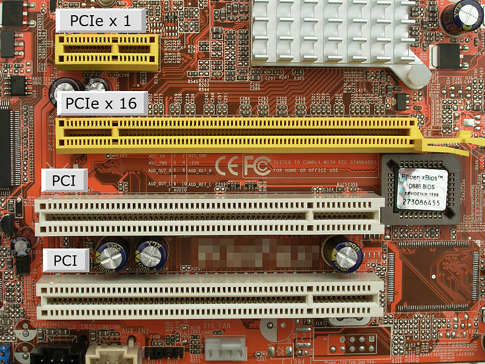

I BUS di espansione

I bus di espansione sono usati per aggiungere nuove funzionalità o dispositivi a un computer, collegando schede aggiuntive alla scheda madre.
Attraverso questi bus è possibile ampliare le capacità di un computer aggiungendo schede video, schede di rete, schede audio e altre componenti.
Esempi di bus di espansione:
PCI (Peripheral Component Interconnect): Utilizzato per collegare schede grafiche, schede di rete e altre periferiche.
PCIe (PCI Express): Una versione più veloce del PCI, usata per dispositivi che richiedono un’ampia larghezza di banda come le moderne GPU.
I bus di espansione permettono al processore di comunicare con le periferiche aggiuntive attraverso schede aggiuntive che si inseriscono negli appositi slot della scheda madre.